WADE.
관람객이 터치 디스플레이에 그린 그림을 물로 바닥에 출력하는 놀이공원 서비스 로봇입니다. 물로 그린 그림은 시간이 지나면 증발하기 때문에 따로 지울 필요가 없습니다.
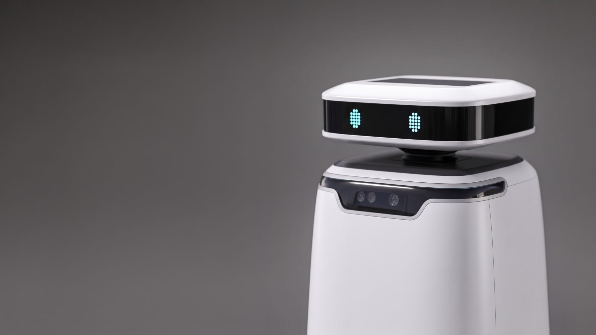
-
 2024.01
HCI Korea
Creative Award · Excellence Award (최우수상)
2024.01
HCI Korea
Creative Award · Excellence Award (최우수상)
- PAT 2026.03 Patent 특허 제10-2942532호 · 워터 드로잉을 위한 로봇 장치
- DES 2024.10 Design Reg. 디자인 등록 제30-1280754호 · 지능형 서비스 로봇
기다리는 시간을 볼거리로 바꾸는 워터 드로잉 로봇
A service robot that turns waiting time into a show, drawn in water
WADE는 야외 바닥에 물로 그림을 그리는 서비스 로봇입니다. 놀이공원에서 가장 불편한 점으로 꼽힌 긴 대기줄(47.9%, 메타베이 2023.06)에서 출발해, 대기 시간을 줄이는 대신 줄 옆 바닥에 그림을 그려 기다리는 시간을 볼거리로 바꾸는 컨셉입니다. 관람객이 머리 위 터치 디스플레이에 그림을 그리면 그림을 20×12개의 점으로 바꾸고, 로봇이 직진하는 동안 12개의 노즐이 한 줄씩 바닥에 물을 뿌려 출력합니다. 물 그림은 소음 속에서도 눈에 띄고, 마르면 흔적 없이 사라집니다.
WADE is a service robot that draws on outdoor ground surfaces with water. It started from the long queues that visitors named as the biggest discomfort at amusement parks (47.9%, Metabay, June 2023): instead of shortening the wait, the robot draws next to the line and turns waiting time into something to watch. A visitor draws on the overhead touch display, the drawing is converted into a 20×12 dot grid, and twelve nozzles print it row by row while the robot drives straight. Water drawings stand out even in a noisy crowd and disappear without a trace once they dry.
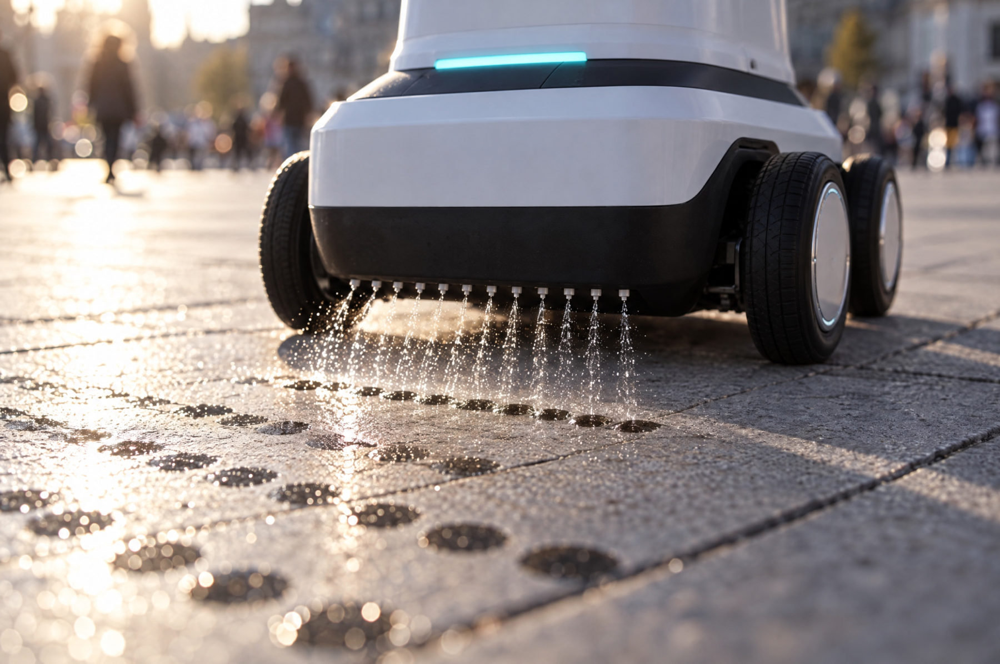
사람에게는 어딘가에 낙서를 하고 흔적을 남기려는 욕구가 있습니다. 그러나 공공장소에서는 남은 흔적을 다시 지워야 하기 때문에 이 욕구를 해소할 방법이 거의 없습니다. 로봇으로 그림을 출력하는 방식도 재료가 바닥에 남으면 같은 문제가 반복됩니다. WADE는 출력 재료를 물로 바꿔서 이 문제를 해결했습니다.
People have an urge to scribble and leave marks. In public spaces, however, there is almost no way to act on it, because any mark left behind has to be removed. Robotic drawing systems face the same issue when the printing material stays on the ground. WADE addresses this by using water as the printing material.
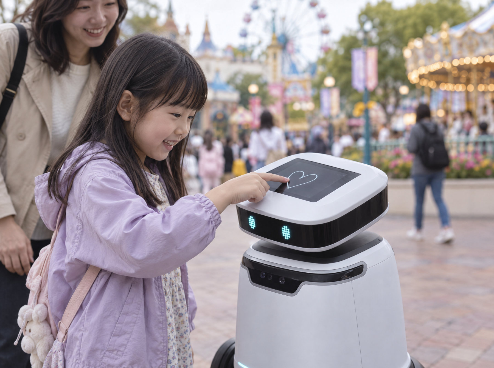
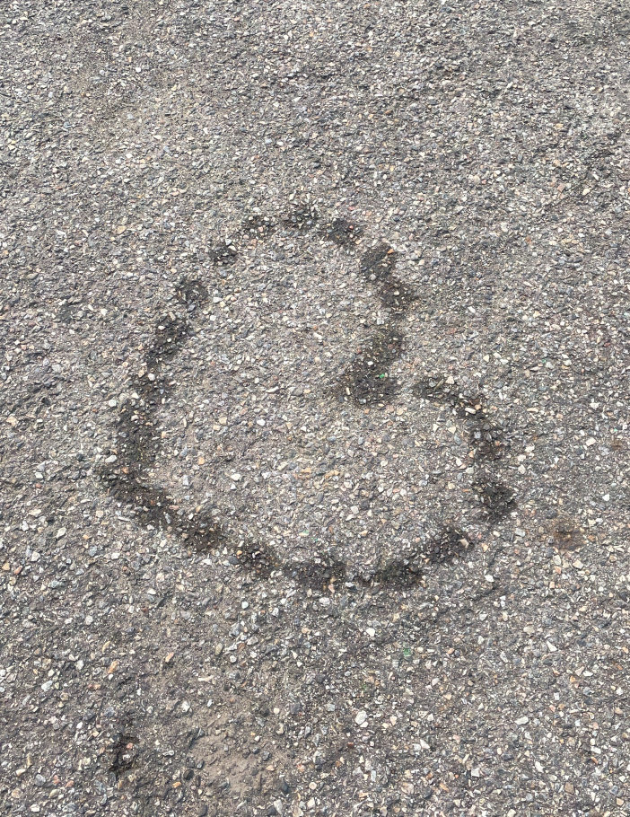
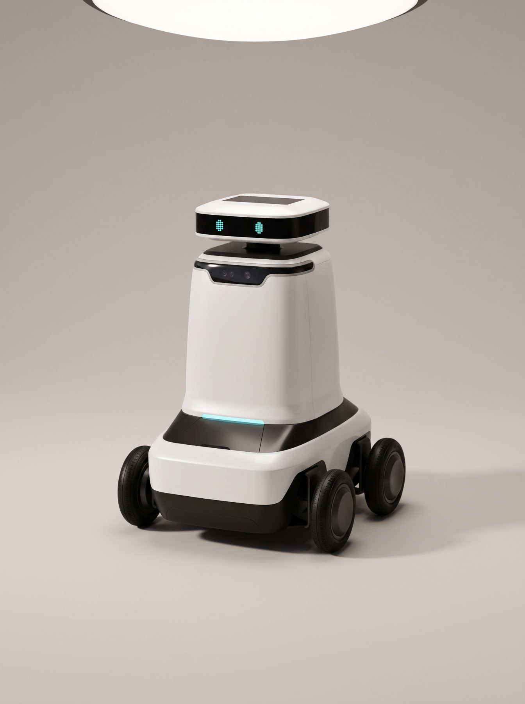
구현 방식은 워터펌프와 솔레노이드 밸브를 조합한 적정기술입니다. 별도 출력 장비 없이 압력탱크로 물을 밀어내고 밸브의 개폐만 제어하기 때문에 야외에서 운용할 수 있고 유지비가 낮습니다. 여기에 틸팅과 스위블이 가능한 헤드와 표정 변화를 더하고, 캐릭터성은 절제하고 직선을 줄인 유선형으로 다듬어 불쾌한 골짜기를 피했습니다.
The system is built on appropriate technology, combining a water pump with solenoid valves. A pressure tank pushes the water out and only the valve opening and closing is controlled, which allows outdoor operation at a low maintenance cost. A tilting and swiveling head with changing expressions was added, while the character was kept restrained, with a streamlined form and fewer straight lines, to avoid the uncanny valley.
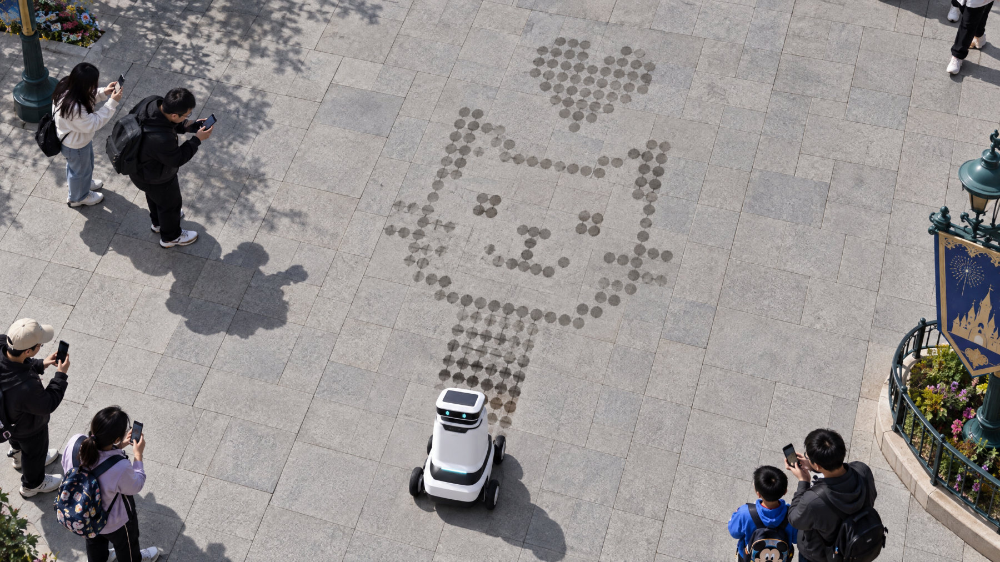
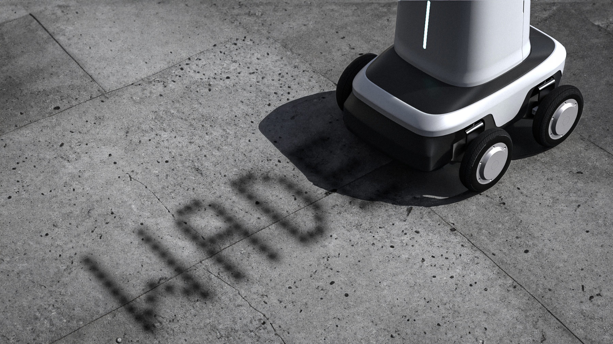
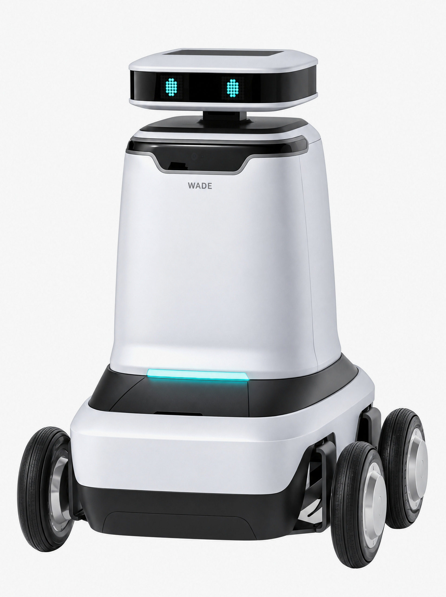
헤드는 틸팅과 스위블이 가능해 사용자 방향으로 얼굴을 돌립니다. LiDAR 센서가 앞에 있는 사람을 2초간 인식하면 주행을 멈추고 얼굴을 사용자 쪽으로 회전시킵니다. 이후 상부 터치 디스플레이로 그림 입력을 받습니다. 표정 변화로 현재 동작 상태를 표시해 처음 사용하는 사람도 진행 순서를 확인할 수 있습니다.
The head tilts and swivels to turn its face toward the user. When the LiDAR sensor detects a person in front for two seconds, the robot stops driving and rotates its face toward that person. It then receives the drawing input through the upper touch display. Changes in facial expression indicate the current operating state, so first-time users can follow the sequence of steps.
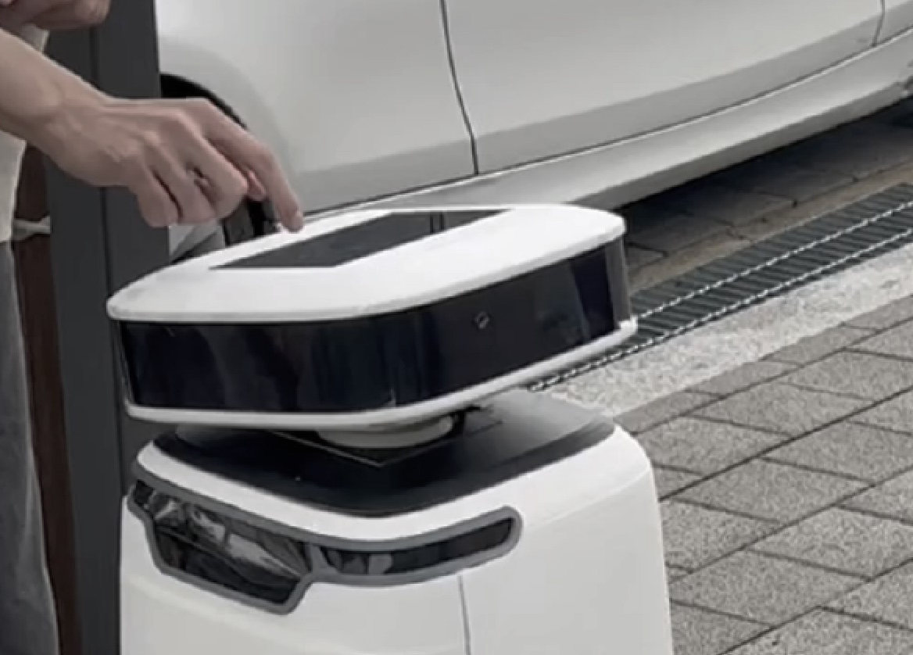
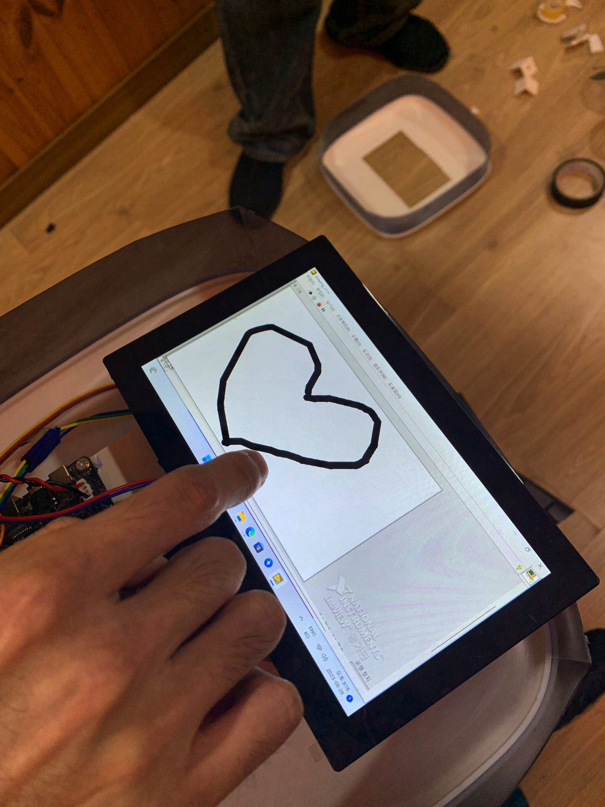
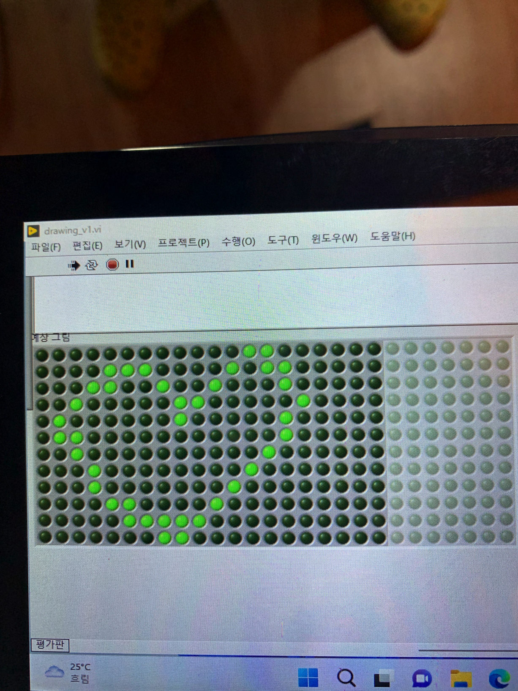
사용자가 그린 그림은 세 단계를 거쳐 바닥에 출력됩니다. 먼저 화면에 입력된 그림을 20×12의 점 데이터로 바꿉니다. 이 데이터를 배열 값에 따라 솔레노이드 밸브를 제어하는 신호로 전송합니다. 로봇이 0.5m/s로 직진하는 동안 12개의 밸브가 열리고 닫히면서 입력한 그림이 바닥에 출력됩니다.
A drawing is printed onto the ground in three steps. The drawing on the screen is first converted into 20×12 dot data. That data is sent as control signals that open and close the solenoid valves according to the array. While the robot drives straight at 0.5 m/s, twelve valves open and close and the drawing appears on the ground.
터치 디스플레이 높이는 신장 120cm 어린이부터 180cm 성인, 휠체어 이용자까지 함께 사용할 수 있도록 폼보드 프로토타이핑으로 설정했습니다. 세 조건의 도달 범위를 비교해 상단 패널의 높이를 결정했고, 조작 요소는 상단 한 면에 모아 한 자리에서 입력을 끝낼 수 있게 했습니다.
The touch display height was set so that children from 120 cm, adults up to 180 cm and wheelchair users can all use it. The panel height was decided by comparing the reach ranges of these three conditions, and all controls are placed on a single upper face so input is completed from one position.
외피는 PLA로 3D 프린팅한 뒤 조립해 제작했습니다. 내부 지지대는 알루미늄 프로파일로 짜서 외피와 부품의 하중을 프레임이 받도록 했습니다. 전시장에서 직접 운용하는 것을 전제로 했기 때문에 부품 교체와 정비가 가능한 조립 구조로 만들었습니다.
The outer shell was 3D printed in PLA and then assembled. The internal support was built from aluminium profiles so that the frame carries the load of the shell and components. Since the robot was to be operated on exhibition floors, it was built as an assembled structure that allows parts to be replaced and serviced.
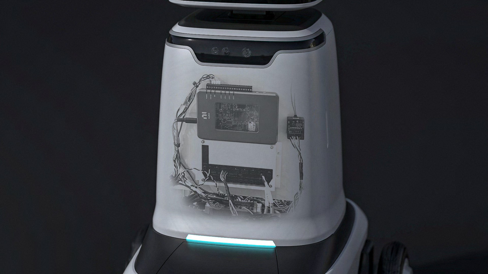
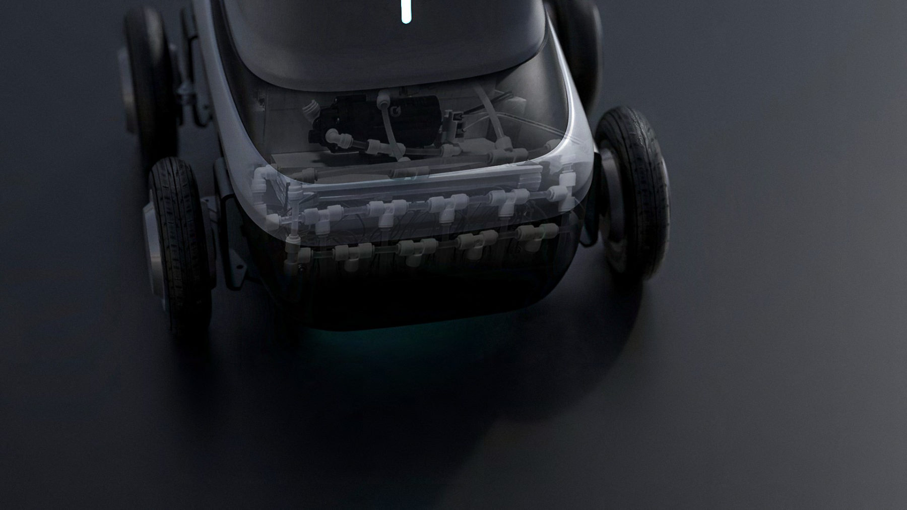
Front
제어부·배선 (NI myRIO · LattePanda)
Control and wiring (NI myRIO, LattePanda).
Rear
물탱크·펌프·솔레노이드 밸브
Water tank, pump and solenoid valves.
물을 사용하는 로봇이기 때문에 누수가 전자부에 닿지 않도록 내부를 분리했습니다. 배선과 제어 부품(NI myRIO · LattePanda)은 전면에, 물탱크와 펌프·분배 호스·솔레노이드 밸브는 방수 패널로 나눈 뒤쪽 공간에 배치했습니다. 하부 LiDAR 센서로 전방의 사람을 인식하고, 몸통 뒷면 LED로 물 잔량을 확인하며, 전면 하단 커버를 열어 배터리를 교체합니다.
Because the robot uses water, the interior was divided so that leaks cannot reach the electronics. Wiring and control components (NI myRIO, LattePanda) sit at the front, while the water tank, pump, distribution hoses and solenoid valves are in a rear compartment behind a waterproof panel. A LiDAR sensor at the bottom detects people ahead, an LED on the rear shows the remaining water, and the battery is replaced through the lower front cover.
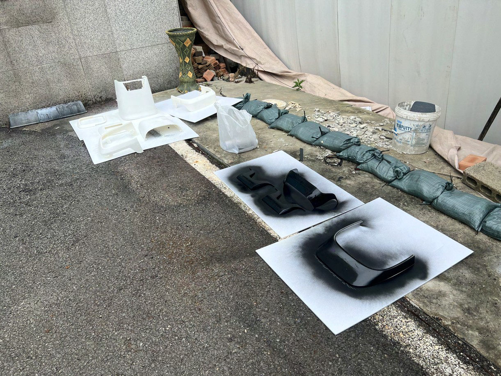
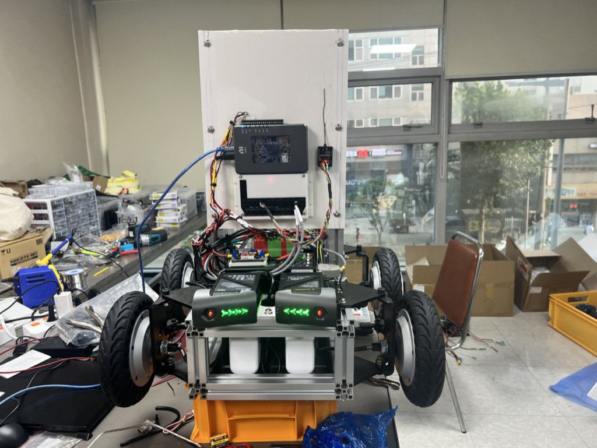
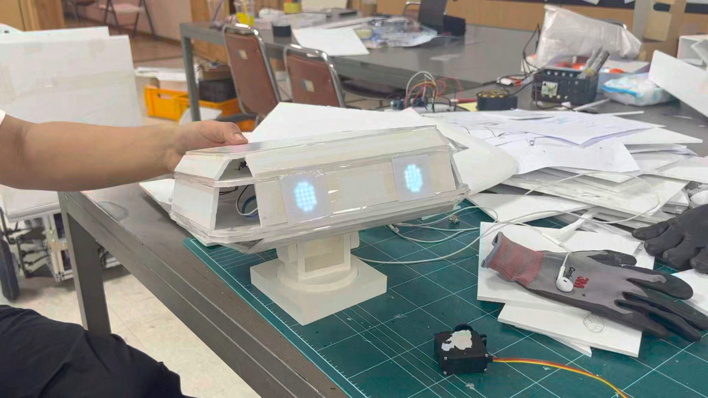
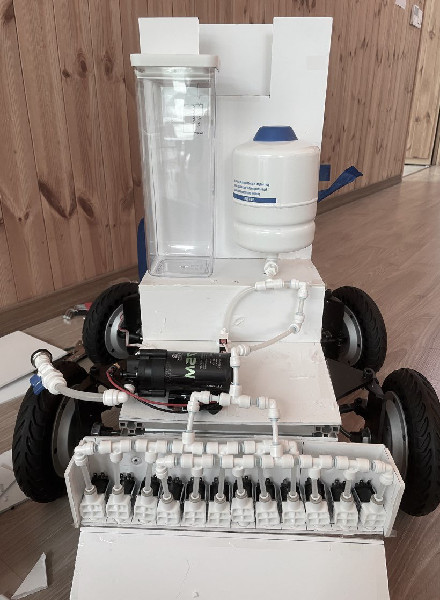
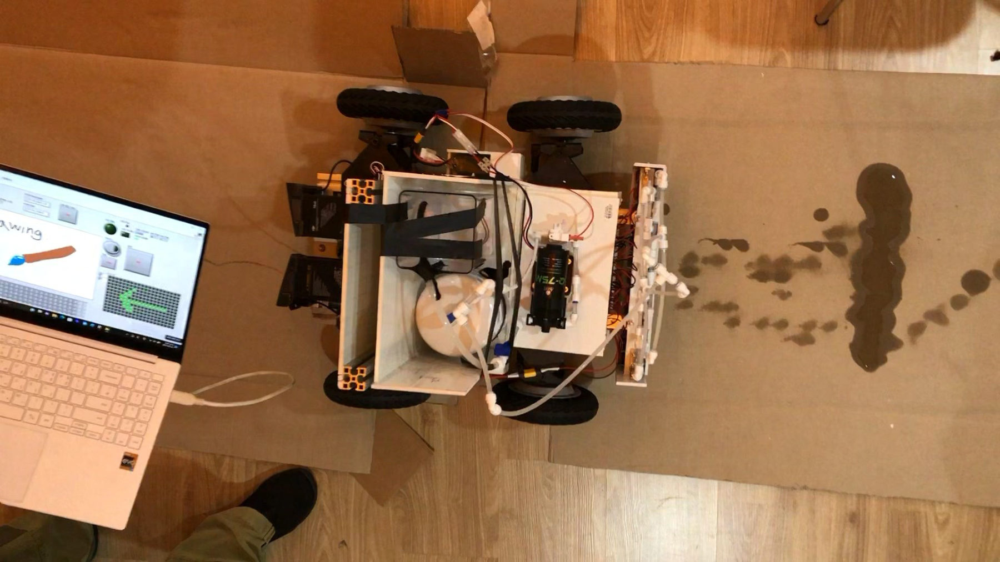
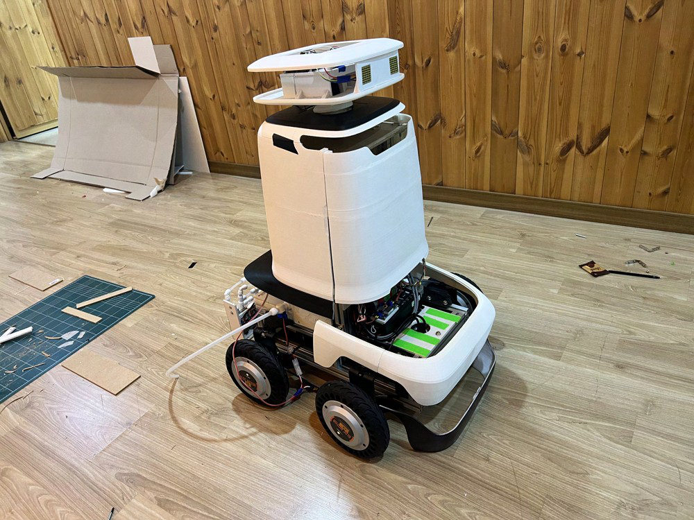
엔지니어 4명과 디자이너 1명으로 구성된 팀에서 디자인 전체를 담당했습니다. 엔지니어링에서 구현 범위 설정과 코딩, 플랫폼 조립, 전기 배선을 맡는 동안 스케치와 3D 모델링, 렌더링, 3D 프린팅, 프로토타이핑, 영상 제작을 진행했습니다. 외장 3D 프린팅·도장 → 플랫폼·배선 → 헤드 프로토타입 → 방수 설계 → 출력 테스트 → 조립 순으로 만들었습니다.
In a team of four engineers and one designer, the entire design track was handled by the designer. While engineering covered scoping, coding, platform assembly and wiring, design covered sketching, 3D modelling, rendering, 3D printing, prototyping and film. The build went from printed and painted shell, platform and wiring, head prototype, waterproofing and print tests to final assembly.
완성한 로봇은 2023 로보월드와 서울디자인페스티벌, 2024 HCI KOREA 전시에서 직접 운용했습니다. 프로토타입은 원격 조종으로 주행하고, 사람을 인식해 정지한 뒤 그림을 받고, 0.5m/s로 직진하며 12개 노즐로 출력합니다. 34°C에서도 물 그림이 5분 이상 유지됐습니다. 이 프로젝트로 HCI KOREA 2024 Creative Award 최우수상을 받았고, 특허와 디자인을 등록했습니다.
The robot was operated at Robot World 2023, the Seoul Design Festival and the HCI KOREA 2024 exhibition. The prototype is driven by remote control; it detects a person, stops to receive a drawing, and prints with twelve nozzles while advancing at 0.5 m/s. At 34°C the drawings stayed visible for more than five minutes. The project received the Excellence Award (최우수상) at the HCI KOREA 2024 Creative Award and was granted a patent and a design registration.
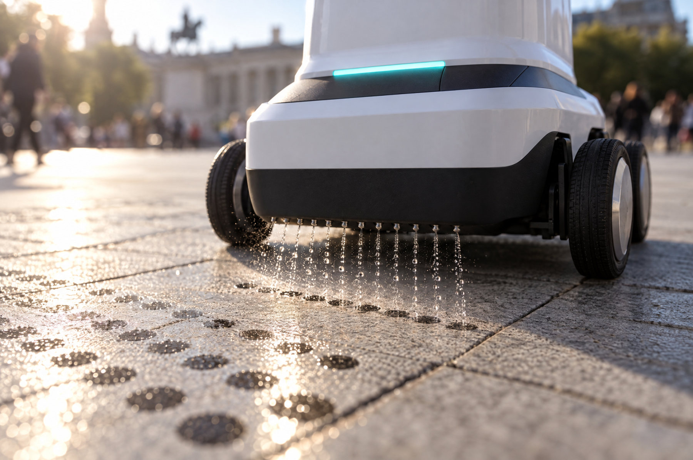